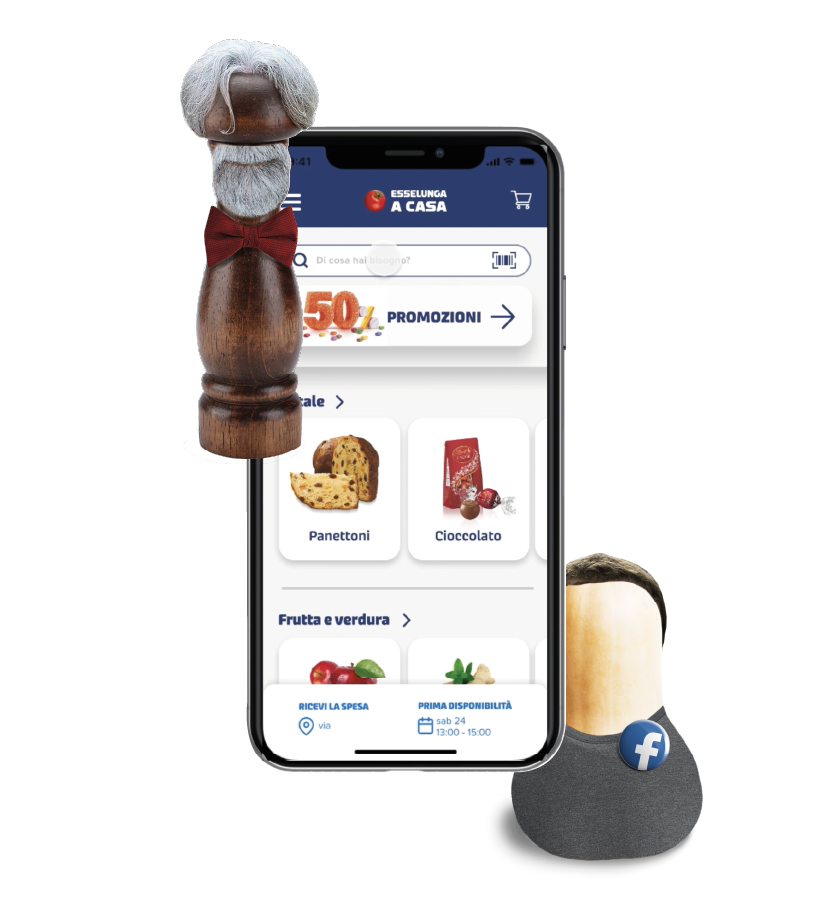

Ergonomics
Redesign Esselunga
- Area: Digital
- Year: 2021

Ergonomics


The request was to redesign the Esselunga website in all its sections, from online shopping to the fidaty catalog, to make the user experience more comfortable and intuitive. So the first step was to study in depth the means of Esselunga and all its competitors, trying to find possible criticalities and strengths. From here it was decided to redesign both the application and the Esselunga website, proposing a more complete and pleasant experience.
Team: Caterina Cedone, Francesca Fincato, Marta Monti, Sofia Motta, Vera Salvaderi
Project: Making the user experience more comfortable according to ergonomic principles
Area: Ergonomics